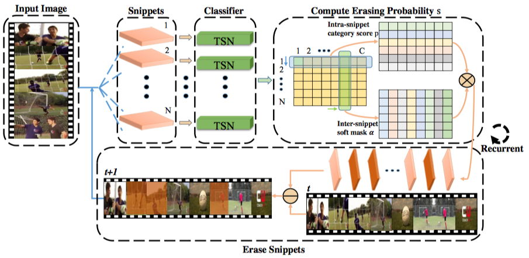
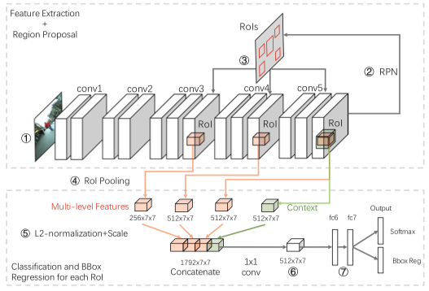

Weijie Kong (孔伟杰)
Master Student
Digital Media R&D Center, School of Electronic and Computer Engineering
Peking Univerity
Office: B201, Peking University Campus, University Town, Xili, Nanshan District, Shenzhen, China, 518055
Email: weijie.kong@pku.edu.cn
Interests
- Computer Vision
- Video Understanding
- Human Action Detection
- Object Detection
- Pedestrain Detection
- Machine Learning
Education
-
school
MSc in Computer Applications Technology, 2020
Peking Univerity, Shenzhen, China -
school
BA in Software Engineering, 2017
Northeastern University, Shenyang, China
About Me
I’m a second-year graduate student in Digital Media R&D Center, Peking Univerity, advised by Prof. Ge Li.
Before starting my M.S., I received my B.S. in Software Engineering from Northeastern University in 2017.
Currently, my main research insterests are in video understanding and human activity detection. In general, I'm interested in computer vision and machine learning.
News
Publications


Deep Pedestrian Detection Using Contextual Information and Multi-level Features
Weijie Kong, Nannan Li, Thomas H. Li, and Ge Li.
International Conference on Multimedia Modeling (MMM), 2018.
[PDF] []
Weijie Kong, Nannan Li, Thomas H. Li, and Ge Li.
International Conference on Multimedia Modeling (MMM), 2018.
[PDF] []
Last modified: October 2 2018